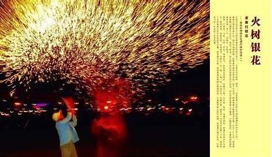

打铁花艺术简介
打铁花，又称"打花"、"打铁串花"，是中国传统民间艺术，已被列入国家级非物质文化遗产名录。
打铁花是将熔化的铁水甩向墙壁或地面，铁水飞溅形成无数火花，犹如烟花绽放，璀璨夺目。这一技艺起源于古代铁匠铺的日常劳作，后发展成为一种独特的民间表演艺术。
打铁花不仅是一种视觉盛宴，更是中国传统工艺与民俗文化的重要组成部分，承载着丰富的历史文化内涵。
了解更多
打铁花的艺术特色
历史悠久
打铁花艺术已有上千年历史，源于古代铁匠铺的日常劳作，是劳动人民智慧的结晶。
技艺精湛
打铁花需要掌握火候、力度和角度，每一个动作都需要精准控制，体现了匠人的高超技艺。
视觉震撼
铁水飞溅形成的火花如烟花绽放，在夜空中形成璀璨夺目的景象，给观众带来视觉盛宴。
文化象征
打铁花象征着吉祥如意、驱邪纳福，在民间节庆活动中具有重要的文化意义。
打铁花的制作流程
01
准备工作
准备生铁、木炭、工具等材料，搭建表演场地，确保安全措施到位。
02
熔炼铁水
将生铁放入炉中熔化，控制温度达到1500℃左右，使铁水呈流动状态。
03
舀取铁水
使用特制的长柄勺舀取适量熔化的铁水，动作要快速准确。
04
抛洒铁水
艺人以特定的力度和角度将铁水抛向墙壁或地面，使其飞溅形成火花。
05
形成铁花
铁水在空中冷却凝固，形成无数细小的铁花，绽放出璀璨的光芒。
传承与保护

随着现代化进程的加速，打铁花这一传统技艺面临着失传的危险。为了保护这一宝贵的非物质文化遗产，各地政府 和民间组织采取了一系列措施：
- 将打铁花列入国家级非物质文化遗产名录
- 设立专项资金支持传承人培养和技艺传承
- 举办打铁花表演活动，扩大社会影响
- 建立打铁花博物馆，系统性保存相关文物和资料
- 开展学校教育和社区活动，让更多年轻人了解并参与打铁花艺术
保护非物质文化遗产，需要全社会的共同努力。让我们一起行动起来，为打铁花这一传统技艺的传承与发展贡献力量。
参与保护